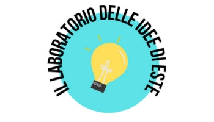

Benvenuti sul sito di Este in Fiore del Laboratorio delle Idee di Este
- Perché questo sito?
- In occasione dell'edizione 2026 di Este in Fiore, i giovani appartenenti al gruppo de "Il laboratorio delle Idee" hanno deciso di realizzare un portale in cui racchiudere le informazioni più importanti raccontate durante le passeggiate tenute nei luoghi cardini della Città proprio in quest'occasione.
- Chi siete?
-
Siamo un gruppo di giovani impegnati nello sviluppo di idee e progetti atti alla promozione e valorizzazione del territorio della città di Este.
A tal proposito, un ringraziamento sincero è doveroso nei confronti del Comune di Este, profondamente impegnato nel costante coinvolgimento della sua popolazione più giovane.